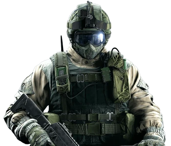

Shuhrat "Fuze" Kessikbayev
Chaos is only an enemy if you're unable to adapt.
Gameplay Description
A Heavy Health Operator, Fuze carries four APM-6 "Matryoshka" Cluster Charges capable of clearing rooms by deploying five sub-grenades through destructible structures such as walls, floors, and windows.
Device Description
Uses Cluster Charges that pierce and stick to walls, releasing sub-grenades on the opposing side
First developed by Fuze in the Ratnik experimental weaponry brigade, the APM-6 "Matryoshka" was Kessikbayev’s attempt to create a more powerful breach charge. It proved to be an effective means of clearing a room, dealing the most damage to hostiles while keeping the Operator relatively safe. The "Matryoshka" can be anchored either vertically or horizontally. Once deployed, the piston burrows through walls or floors, dispersing live cluster grenades while spinning to deal the most damage from any directions.
The "Matryoshka" is most useful in conditions where collateral damage is not a concern. Not recommended for hostage extractions, or in areas where there is a high risk of friendly fire.